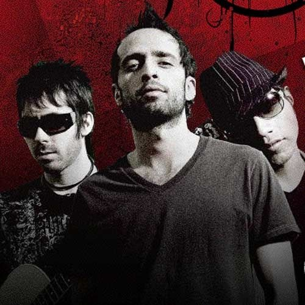
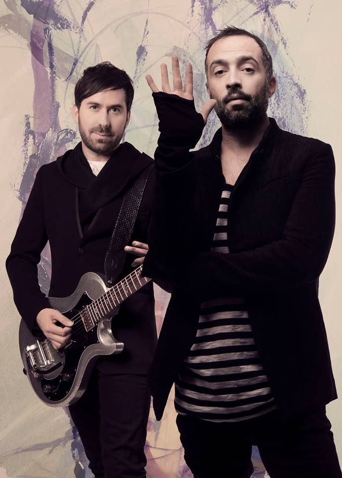

|  | ||||
|  |
| CANCION | LETRA |
| ESTE MOMENTO |
Tantas cosas que tenemos que desaprender
Comenzar de nuevo, decidir creer Tantas guerras fui buscando paz Y lo encuntro en lo que tú me das Hoy tus brazos me sostienen antes de caer Si antes de llegar a ti Me tuve que perder y cuántas vueltas di A punto de volverme loco Me sacaste poco a poco Tu voz Apaga mi silencio y mi contradicción Y, por favor No des ni un paso afuera de mi corazón Que por ti la eternidad se ha vuelto este momento, oh Hay demonios que al fin pude desaparecer Porque vi en tus ojos lo que quiero ser Si te tengo no hace falta más Ya no hay nada que buscar atrás Eres el presente donde quiero estar Si tuve que pisar el fondo y al infierno ir Fue para aprender Me enseñaste la salida Regresándome la vida Tu voz Apaga mi silencio y mi contradicción Y, por favor No des ni un paso afuera de mi corazón Porque el cielo entero cabe en este sentimiento Y lo que busca afuera, lo he encontrado adentro, oh-oh Que por ti la eternidad se ha vuelto este momento, oh-oh |
| DECIDISTE DEJARME |
Me envenenaste el silencio Se fue mi aire detrás de ti Me arrebataste hasta el suelo Tiraste y me rompí Y fue una bomba de tiempo Todo el dolor que dejaste aquí Pero después del incendio De nuevo quieres derrumbar Lo que quedo de mí Tú decidiste dejarme Tú disparaste primero Ni se te ocurra acercarte No te perdono ni quiero Nada más de ti y aunque tu recuerdo arde No voy a caer, otra vez llegaste tarde Y no es cuestión de egoísmo Quieres que juegue a lo mismo Correr detrás de ti Te quise y no me arrepiento Porque me llevo lo que aprendí A veces ganas perdiendo Y no hay manera de fallar Si das como te di Tú decidiste dejarme Tú disparaste primero Ni se te ocurra acercarte No te perdono ni quiero Nada más de ti y aunque tu recuerdo arde No voy a caer, otra vez llegaste tarde Al final, la vida pone a cada quien en su lugar (En su lugar) Eso es lo que pasa cuando tratas de tocar el fuego Tú decidiste dejarme Tú disparaste primero Ni se te ocurra acercarte No te perdono ni quiero Nada más de ti y aunque tu recuerdo arde No voy a caer, otra vez llegaste tarde |
| SOLO PARA TI |
Eres todo lo que pedía
Lo que mi alma vacía Quería sentir Eres lo que tanto esperaba Lo que en sueños buscaba Y que en ti descubrí Tu has llegado a encender Cada parte de mi alma Cada espacio de mi ser Ya no tengo corazon Ni ojos para nadie Solo para ti Eres el amor de mi vida El destino lo sabia Y hoy te puso ante mi Y cada vez que miro al pasado Es que entiendo que a tu lado Siempre pertenecí Tu has llegado a encender Cada parte de mi alma Cada espacio de mi ser Ya no tengo corazon Ni ojos para nadie Solo para ti Solo para ti Solo para ti Esto es de verdad Lo puedo sentir Se que mi lugar Es junto a ti Eres todo lo que pedía Lo que no conocía Y que en ti descubrí |
| BESAME |
Bésame, a destiempo Sin quedar y en silencio Bésame, frena el tiempo Haz crecer lo que siento, uh-uh-uh Bésame, como si el mundo se acabara después Bésame, y beso a beso por el cielo al revés Bésame, sin razón porque quiere el corazón Bésame Siénteme, en el viento Mientras yo Muero lento Bésame, sin motivos Y estaré, siempre contigo, oh-oh-oh-oh Bésame, como si el mundo se acabara después Bésame, y beso a beso pon el cielo al revés Bésame, sin razón porque quiere el corazón Bésame Bésame, como si el mundo se acabara después Bésame, y beso a beso pon el cielo al revés Bésame, sin razón porque quiere el corazón Bésame Bésame, así sin compasión Quédate en mí sin condición Dame tan solo un motivo Y me quedo yo (y me quedo yo) Y me quedo yo (y me quedo yo) |
| DE QUE ME SIRVE LA VIDA |
Estoy a punto de emprender un viaje Con rumbo hacia lo desconocido No sé si algún día vuelva a verte No es fácil aceptar haber perdido Por más que suplique no me abandones Dijiste no soy yo, es el destino Y entonces entendí que aunque te amaba Tenía que elegir otro camino De qué me sirve la vida Si eres lo que yo pido Los recuerdos no me alcanzan Pero me mantienen vivo De qué me sirve la vida Si no la vivo contigo De qué me sirve la esperanza Si es lo último que muere Y sin ti ya la he perdido Escucha bien amor lo que te digo Pues creo no habrá otra ocasión Para decirte que no me arrepiento De haberte entregado el corazón Por más que suplique no me abandones Dijiste no soy yo, es el destino Entonces entendí que aunque te amaba Tenía que elegir otro camino De qué me sirve la vida Si eres lo que yo pido Los recuerdos no me alcanzan Pero me mantienen vivo De qué me sirve la vida Si no la vivo contigo De qué me sirve la esperanza Si es lo último que muere Y sin ti ya la he perdido De qué me sirve la vida Si eres lo que yo pido Los recuerdos no me alcanzan Pero me mantienen vivo De qué me sirve la vida De qué me sirve la esperanza Si es lo último que muere Y sin ti ya la he perdido |